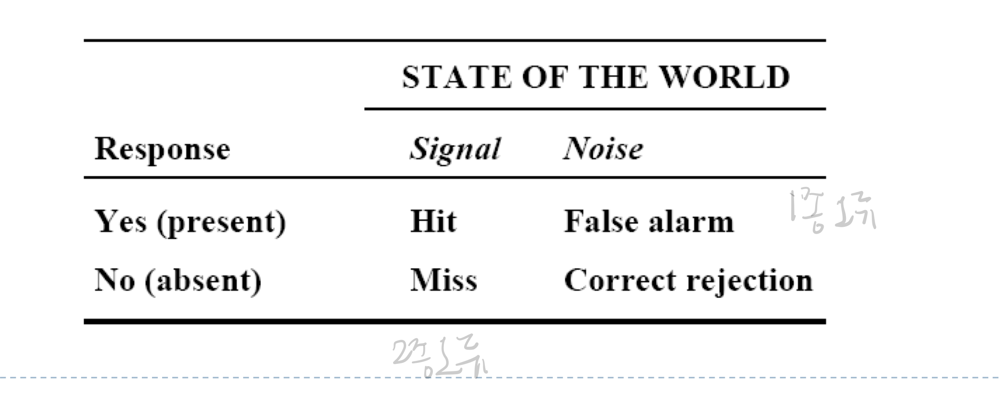
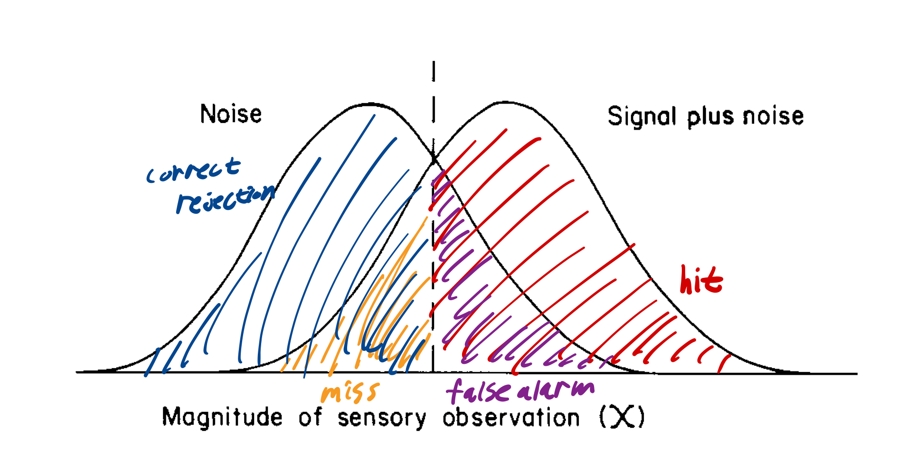
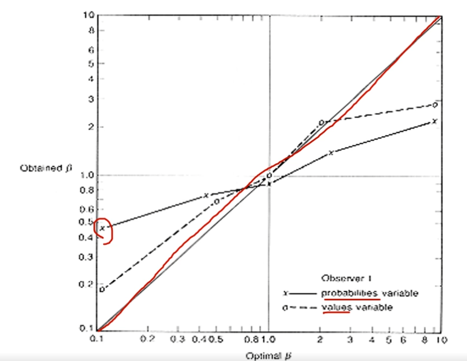
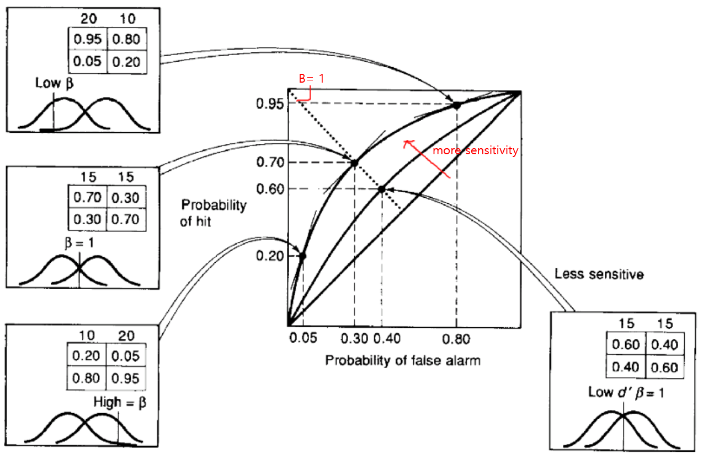

Signal Detection Theory
인간 공학

Overview
- 인간의 정보 처리 과정 중
perception에 관련된 것 - perception 단계에서 자극 뿐 아니라 노이즈도 같이 들어옴
- 여러가지 신호 중 무엇이 중요한지 판단하는 것
- siganal 탐지 과정을 정량적 모델로 분석하고 성능 평가가 목표
- 인공지능 분야에서 중요성이 대두되고 있음
Example
- Quality control inspector
빵이나 과자가 찌그러졌는지 검사, 반도체 품질 검사. 요즘에는 기계가 대부분 담당 - Detection of a flashing warning light (or cctv)
거수자 탐지 - Airport security guard
- Detecting peculiar patterns in medical imaging (x-ray)
종양, 암세포 탐지 - Mobile phone rings (sound)
phantoms vibration - Morning alarm is active or not (visual)
주변의 제품, 서비스 문제 파악, 해결 디자인 제시, 검증
Signal Detection Theory
- Trials
- Signal case(signal + noise): target이 존재
- Noise case(noise only): target이 없음
- Response
- Yes
- No

Hit rate: P(Hit) = Number of Hits / Number of Signal TrialsFalse alarm rate: P(FA) = Number of False Alarms / Number of Noise TrialsMiss rate: P(Miss) = 1 - P(Hit)Correct rejection rate: P(CR) = 1 - P(FA)
What does it mean to detect?
- signal is
digital (exist / not exist) - Absolute threshold is exist
Assumptions
- 관찰자가 관찰할 수 있는 signal은 숫자나 변수로 표현할 수 있어야함
- signal이 random variation이 있다
- 피험자가 signal이 있는지 없는지 단순하게 표시할 수 있다.
Distribution of signal and noise

sensitivity index (d')- 값이 작으면 분간 힘듦
- 값이 크면 분간 쉬움
- signal의 성격에 따라 결정됨
response bias (β)- criterion에 따라 yes라고 대답하는 비중과 no라고 대답하는 비중
- 평가자에 따라 결정됨
- d′이 0, β가 50%면 그냥 랜덤으로 대답한 것과 같음
d′ 계산
- P(M), P(CR) 계산
- 표준 정규분포를 그림
- M과 CR의 z값을 찾음
- d′ = (0 - z(M)) + (z(CR) - 0)
β 계산
- d′과 관계 없이 조절
- \(β = \frac{P(X/(S+N))}{P(X/N)}\)
\(\ln β = d′λ_{center}\) - β ~ 1: neutral
\(λ_{center}\) 계산
\(λ_{center} = -\frac{1}{2}(Z(FA)+Z(H))\)
- \(λ_{center}\) = 0:
ideal observer - \(λ_{center}\) < 0:
liberal. yes라고 대답하는 비중이 늘어, hit rate가 높아지지만 false alarm rate도 높아짐
ex) 용의자를 찾는 경찰, 암세포 탐지 - \(λ_{center}\) > 0:
conservative. no라고 대답하는 비중이 늘어, correct rejection rate가 높아지지만 miss rate도 높아짐
ex) 억울한 죄인을 만들지 않으려는 범원 판결
Optimal Response Criterion
signal이 더 많은 환경, noise가 더 많은 환경이 있음. 즉, probability가 다를 수 있음
또, Effects of payoffs가 있음
- signal이 많은 환경 -> criterion을 낮추는게 좋음. \(β_{opt} < 1\)
- noise가 많은 환경 -> criterion을 높이는게 좋음. \(β_{opt} > 1\)
- \(β_{opt} = \frac{P(N)}{P(S)} * \frac{V(CR) + C(FA)}{V(H) + C(M)}\)
Sluggish β

- \(β_{opt}\)가 낮은 경우, ideal보다 덜 conservative함.
- \(β_{opt}\)가 높은 경우, ideal보다 덜 risky함.
- 확률에 의해 b가 조정될 때 더 많이 발생함.
- 확률에 대한 계산이 잘못되는 경우
- 평가자가 반복되는 반응에 bored해지는 경우
ROC Curve

Signal Detection Performance
Response Bias (β)
- 잘 맞추면 보상을 준다
- false signals to raise signal rate
- False Alarm에서도 incentive를 준다.
Sensitivity (d′)
- give feedback
- signal을 조금 더 오래 보여줌
- signal을 강조
- signal을 움직이게
- 휴식 시간을 충분히 줌
- signal이 어떠넌지 잘 보여줌
- 온갖 감각으로 signal을 보여줌